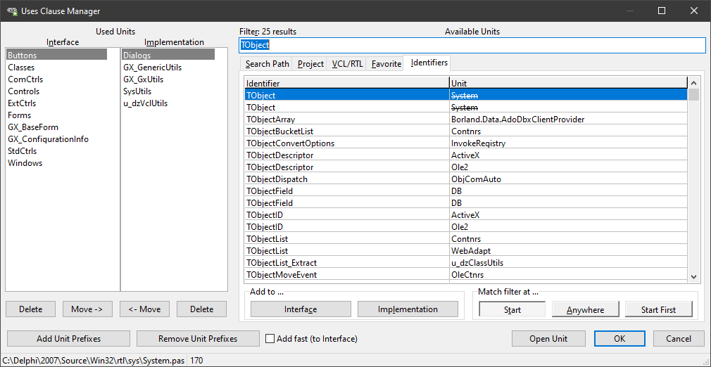
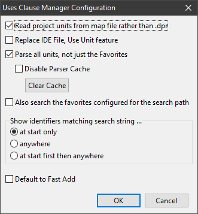

Uses Clause Manager |
|
The Uses Clause Manager allows you to manage both uses clauses in the current unit.  On the left there are two lists with the units in the Interface and Implementation uses clauses respectively. The four buttons below these lists Delete from these lists or Move entries from one of the lists to the other. It is also possibly to drag files from the Explorer to any of these lists to add a unit.
On the right there are five tabs:
•Search Path •Project •VCL/RTL •Favorite •Identifiers
Starting from the right, because it is probably the most useful one, is the Identifiers tab. It lists all identifiers from units in the units search path. The filter above the list allows to narrow down the results. In the screen shot the filter contains "TObject" which results in a list of all identifiers that start with this string, e.g. TObject, TObjectArray, TObjectBucketList etc. The list is updated dynamically, so changing the filter will immediately show different entries. Entries are sorted alphabetically. There are three buttons that control the way the filter works:
•Start •Anywhere •Start First
Start first means that the list will show the entries that start with the search string first, followed by others where search string is anywhere in the identifier. Note that these buttons actually can get the input focus, so they can be pressed using the keyboard.
The Identifiers in the list are updated in a background thread. There is a cache that is kept up to date with all identifiers that have been parsed before. The directory for this cache is configured in the GExperts Configuration dialog on the General tab.
Add Unit Prefixes and Remove Unit Prefixes are helpful for people who develop software for multiple Delphi versions including those ancient versions that did not support namespaces.Adding these prefixes is a bit tricky because the experts needs to go through all the configured namespaces in the project and the use the unit search path to find a unit matching these namespaces. If it does not find them, it will not change the unit name.
The check mark Add fast (to interface) or Add fast (to implementation) will automatically add the selected unit to the uses clause given in the caption and close the dialog. Which uses clause is given in the caption depends on where the cursor in the edit window was located. If it was in the interface section, the caption will say "to interface", if it was in the implementation section, the caption will say "to implementation".
Open Unit does the obvious: It opens the selected unite in the code editor and closes the dialog. Note that there is a shortcut Ctrl+O for it, or you can just double click an entry.
OK closes the dialog and commits the changes. It also remembers the currently selected tab and whether the Add fast check mark was set. Cancel closes the dialog and discards any changes.
Most buttons have got a mouse over hint giving a short description and the keyboard shortcut for them.
Continuing the tabs from the right:
Favorite is a list of favorite units. Initially this list is empty. Add Unit adds to this list, Delete Unit deletes the currently selected one. The list also supports Drag and Drop from the Explorer.
VCL/RTL is a list of all units in the VCL / RTL. The caption is a bit of a misnomer because the list also contains units from the Firemonkey framework.
Project is a list of all units in the current project.
Search Path contains all units in the current unit search path.
Each of these tabs has got a button Add all to Favorite which will do what it says: Add all the units from the lists to the favorites. Again there is a Filter above the list that allows narrowing down the listed entries, e.g. entering "vcl." will only show entries that contain that string in the unit name.
The buttons in the Add to ... groupbox should be self explanatory. They add the selected unit to the uses clause in the interface and implementation section respectively. Note that both buttons have two keyboard shortcuts Alt+C/Alt+L adds the unit Ctrl+C/Ctrl+L adds the unit and automatically closes the dialog. It is also possible to drag a unit from the lists on the right to the Interface or Implementation unit lists on the left. Dragging also works in the other direction by removing entries from the list. Not that the only list on the right that can accept entries is the one on the Favorite tab.
The status bar always shows the full path of the selected unit. Right clicking on the status bar shows a context menu with the following entries: •Copy this text to the clipboard •Copy this file to the clipboard •Open location of this file
The Uses Clause Manager has some additional configuration options available from the GExperts configuration dialog:  •Read project units from map file rather than .dpr means that the Project tab will be filled with units read from the project's map file. This requires that a map file has been created. This is a Linker setting in the project options.
•Replace IDE file, Use Unit feature means that Use Unit menu entry in the file menu will open the Uses Clause Manager instead.
•Parse all units, not just the Favorites means that the parser that fills the Identifier tab will not just handle the units listed on the Favorites tab but all units in the search path. oDisable Parser Cache means that the parser will always run when the Uses Clause Manager dialog is opened. Filling the Identifier list will be much slower in this case. Alternatively to setting this option, the Clear Cache button allows to delete stale cache files if there were any.
•Also search the favorites configured for the search path refers to the favorites configured for the xxxxx expert
•The Show identifiers matching search string option allows to preselect on of the three buttons in the Match filter at group box.
•Default to Fast Add sets the Add fast check mark in the dialog.
|